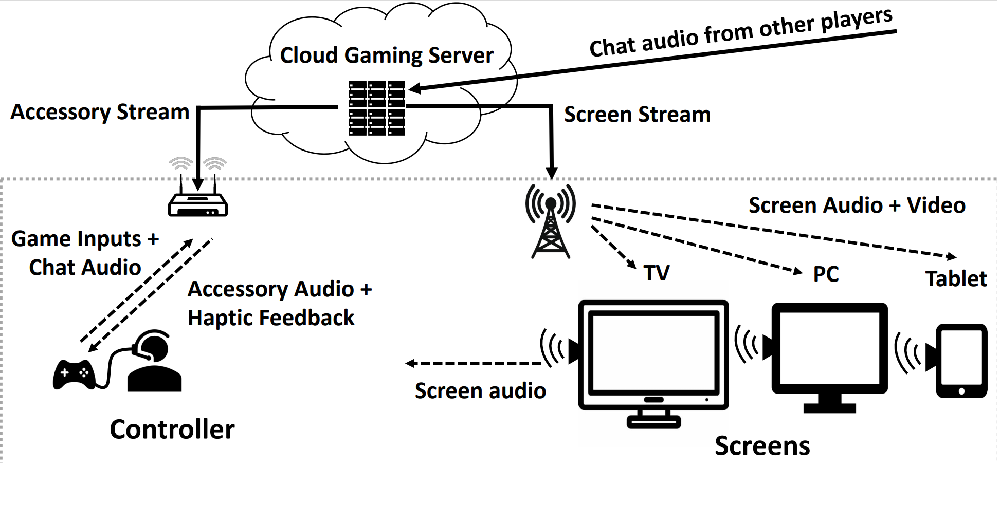

Communication Protocols for Next Gen Xbox Gaming

|
|

|
Summary
A typical gaming session involves one or more player generating inputs such as joystick movements and button presses that need to be transmitted to a console that runs the game engine. The game engine evolves the game state based on received inputs and renders the corresponding video/audio frames as well as haptic feedback that must then be transmitted to the respective devices - e.g. audio to the headset and/or screen, haptic feedback to the gaming controller and video to the sreen such as a T.V screen.
Consequently there are different kinds of traffic flows within a single gaming session,
each with different requirements in terms of latency and reliability. For example, analogue joy-stick based inputs are periodically sampled (typically 2-16ms depending on scenario) and can tolerate losses while digital button presses have to be reliably delivered before the game engine renders the next frame. Users start to percieve packet losses in the video/audio streams beyond 0.5% depending the nature of sounds are often more perceptive to successive packet losses.
Gaming controllers are power and compute constrained embedded devices, and need to make use of resources judiciously. Even though the consoles the significatly more endowed, their resources are usually used up by the rendering of video/audio as well as the game engine, often with little to spare. In case of cloud gaming, where the consoles reside in the cloud, network latencies need to be managed, in addition with maintaining time synchronization aming audio,video, and haptic streams.
As such design of the communication protocols PHY layer and all the way to the application bring unique challenges. For the past three years, I have working on design of the next next generation communication protocols for Xbox.